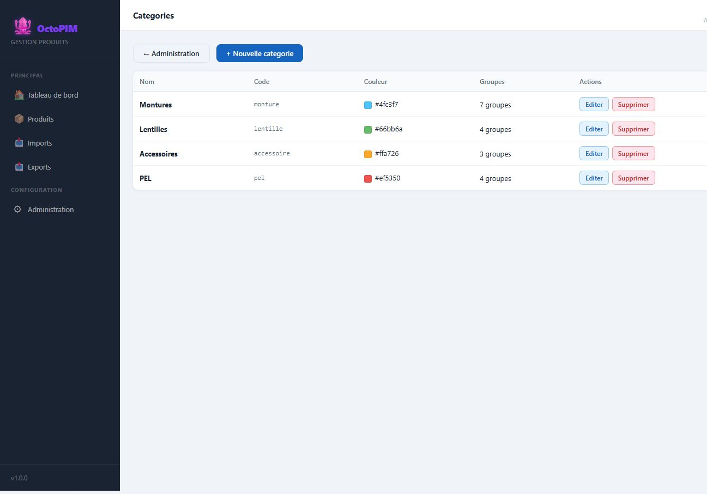

Categories de produit
La categorie est la famille du produit. Elle decide quels onglets (groupes d’attributs) apparaissent sur la fiche, et sert de maille pour les droits d’acces.
Qu’est-ce qu’une categorie ?
C’est une famille metier : Montures, Lentilles, Accessoires, PEL. Un produit appartient a une seule categorie. Creer une categorie consiste surtout a choisir les groupes d’attributs qu’elle expose.

A quoi sert une categorie ?
- Adapter la fiche au type de produit (pas de « largeur des verres » sur une lentille).
- Filtrer la liste, le dashboard, l’import et l’export.
- Porter les droits : un role peut ecrire les Montures et seulement lire les Lentilles.
- Clef des conditions commerciales (avec marque, fournisseur, segmentation).
Composition (maquette)
| Categorie | Onglets (groupes) |
|---|---|
| Montures | Informations generales, Visuels, Conditions commerciales, Caracteristiques monture, Tarification, SEO |
| Lentilles | Informations generales, Visuels, Caracteristiques lentille, Tarification lentilles + PEL |
| Accessoires | Informations generales, Visuels, Caracteristiques accessoire, Conditions commerciales, Tarification, SEO |
| PEL | Informations generales, Visuels, Caracteristiques PEL, Tarification lentilles + PEL |
Ce que chaque famille expose
Un produit a une seule categorie. Elle decide les onglets de la fiche, la barre de la liste detaillee, le filtre d’import et d’export, et les droits. L’ordre des onglets se regle en glissant les groupes dans l’edition de la categorie. Une categorie nouvelle donne tout a l’admin systeme, la lecture a la consultation, et rien aux autres roles jusqu’a reglage.
Montures
Informations generales, Visuels, Conditions commerciales, Caracteristiques monture, Tarification, SEO, et le groupe IWI pour l’export. La tarification monture est le prix catalogue, le PA interne HT (catalogue × (1 − remise interne)), le PA opticien HT (catalogue × (1 − RF) × (1 − RFA)), la marge interne HT (PA opticien − PA interne), le PVMC (catalogue × 2,6 en optique, × 1,9 sinon, a l’euro superieur) et le prix arrondi HT (PVMC / 1,2). Ces formules ne lisent pas la categorie : sur une autre famille, ce sont d’autres champs.
Lentilles
Informations generales, Visuels, Caracteristiques lentille, Tarification lentilles + PEL. La marque est le meme attribut que les conditions commerciales, en tete des caracteristiques. Il n’y a pas d’onglet Conditions commerciales sur cette famille : la marque se saisit ici.
PEL
Informations generales, Visuels, Caracteristiques PEL, Tarification lentilles + PEL. La marque est deja dans Caracteristiques PEL. Le groupe de prix est le meme que les lentilles : prix de vente TTC saisi, prix de vente HT = TTC / 1,2, tous deux a 2 decimales. Rien d’autre dans ce groupe.
Accessoires
Memes onglets Conditions commerciales, Tarification et SEO que les montures, plus Caracteristiques accessoire. Le jeu d’essai vient de la BDD Accessoires. Le nom est la designation web. L’EAN est le GTIN. Le code e-commerce est le code article web. Le code SAP est le code article magasin. Les canaux reprennent l’etat Optic 2000 et Lissac : Active = Oui, Desactive = Non, En attente = En attente. La couleur est le meme attribut que la monture. La matiere accessoire est un texte a part : la liste matiere monture alimente les codes IWI et ne se partage pas. Dimensions, conditionnement d’origine, annee de lancement et designation magasin sont dans Caracteristiques accessoire. L’annee de lancement n’est pas la date de creation de la fiche. Les prix calcules sont des champs dedies : PV TTC arrondi (prix opticien unitaire × coefficient, euro superieur), PV HT (ce montant / 1,2), marge HT (PV HT − prix opticien unitaire), taux accessoire (marge / PV HT). Les champs de prix monture restent masques, et l’inverse aussi.
RG-CAT-02 — Les onglets de la fiche et la barre de la liste detaillee sont les groupes rattaches a la categorie. L’ordre se regle en glissant les groupes dans l’edition de la categorie. La vue detaillee demande une categorie.
RG-CAT-03 — Une nouvelle categorie recoit des droits par defaut (admin systeme : tout ; consultation : lecture ; les autres : rien) — a ajuster ensuite.
RG-CAT-04 — Accessoires expose les memes onglets Conditions commerciales, Tarification et SEO que les montures. Le jeu d’essai vient de la BDD Accessoires : nom = designation web, EAN = GTIN, code e-commerce = code article web, code SAP = code article magasin, canaux O/L = etat Optic 2000 / Lissac (Activé = Oui, Désactivé = Non, En attente = En attente). Couleur est le meme attribut que sur la monture. Matiere accessoire, dimensions, conditionnement d’origine, annee de lancement et designation magasin restent dans Caracteristiques accessoire. Les prix calcules de l’accessoire sont des attributs a part (PV TTC arrondi, PV HT, marge HT, taux accessoire) : une formule ne change pas selon la categorie.
RG-CAT-05 — Lentilles et PEL partagent le groupe « Tarification lentilles + PEL ». Il ne contient que le prix de vente TTC et le prix de vente HT, tous deux a 2 decimales. La marque des lentilles est le meme attribut que les conditions commerciales, en tete de Caracteristiques lentille.